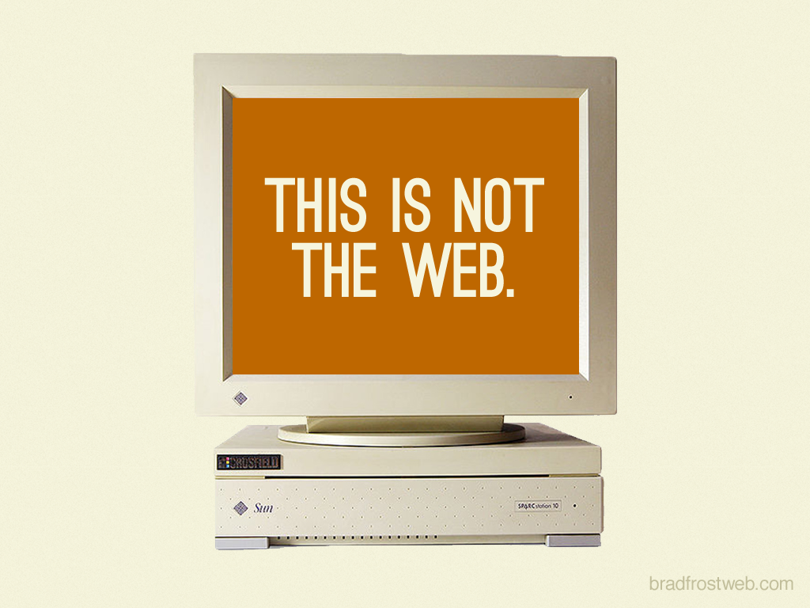

ウェブアクセシビリティ 基礎講座
私
桝田 草一 @masuP9
株式会社SmartHR プログレッシブデザイングループ
私のこれまで
- 20歳: 広告代理店でウェブ制作のアルバイト
- 22歳: 新卒で製造業向けの法人営業
- 29歳: ウェブ制作会社に入社してフロントエンドエンジニアに
- 33歳: サイバーエージェントに入社
- 36歳: SmartHRに入社してデザイナーに
- 37歳: アクセシビリティスペシャリスト/マネージャーに
アクセシビリティとは
アクセシビリティ
accessibility
access + ability = アクセス可能性
アクセスできる
- 知覚できる
- 操作できる
- 理解できる
- 壊れない
知覚できる
隠しテキストとかもう世代的に通じ無さそう
操作できる
理解できる
আমি একটু অ্যাক্সেসযোগ্যতা দক্ষতা আছে
I have a little accessibility skill. ワタシハアクセシビリティチョットデキル
壊れない
- 致命的なバグがあって目的が達成できない
- 崩れていて読めない
etc...
アクセシビリティのお隣さんたち
- アベイラビリティ(Availability)
- ファインダビリティ(Findability)
- ユーザビリティ(Usability)
明確に区別されず領域は重なる
もし
- きづけない...
- 操作できない...
- わからない...
- 壊れてる...
👉ユーザー体験は最悪！
ウェブをとりまく多様性
ユーザーの多様性
およそ13人に1人
- 身体障害 - 29人に1人
- 知的障害 - 111人に1人
- 精神障害 - 30人に1人
デバイスの多様性



閲覧環境の多様性
- 屋外

- 電車の中

- 料理中

- 運転中

〜づらいは誰にでも
見えづらい（ない）
- 全盲
- ロービジョン
- コンタクト外した
- 高齢者
- 後ろの方の席
- 眩しい環境
きこえづらい（ない）
- 失聴
- 難聴
- イヤホン忘れた
- 高齢者
- 授業中
- うるさい環境
操作しづらい（できない）
- 全身不随
- 四肢欠損
- 怪我した
- 高齢者
- マウスが壊れた
- 手袋している
誰かの使いにくいは、
誰かには使えない。
誰かの使えるは、
誰かには使いやすい。
多様であることの価値


多様性の尊重

どうやってアクセシブルにするか
考え方
- 単純化する
- 自動化する
- 選択肢を複数提供する
- 機械で読み取れるように
UIデザイン的には
- モードレス
- テキスト中心
- 線形/静的なレイアウト
- コントラスト比を保った配色
実装的には
HTMLをちゃんと書く
参考リソース
HTML解体新書
HTMLの仕様の歴史、現在地、アクセシビリティ上の注意点までちゃんと解説されている本。
デザイニングWebアクセシビリティ
主にウェブサイト制作のワークフローでどのようにアクセシブルなサイトをデザインするか、についての本
 SmartHR Design System
SmartHR Design System
ウェブアクセシビリティ簡易チェックリスト や試験結果を公開しています。
終わり